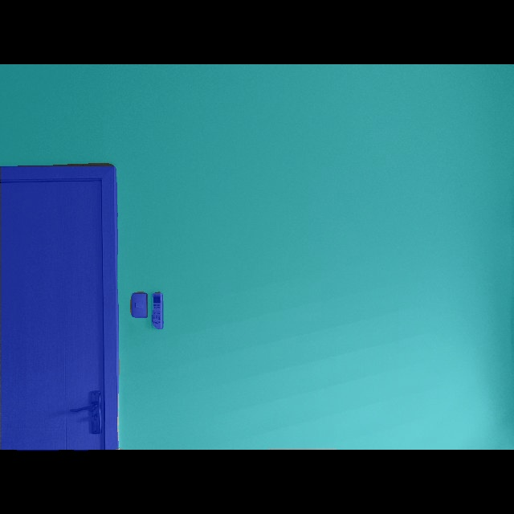
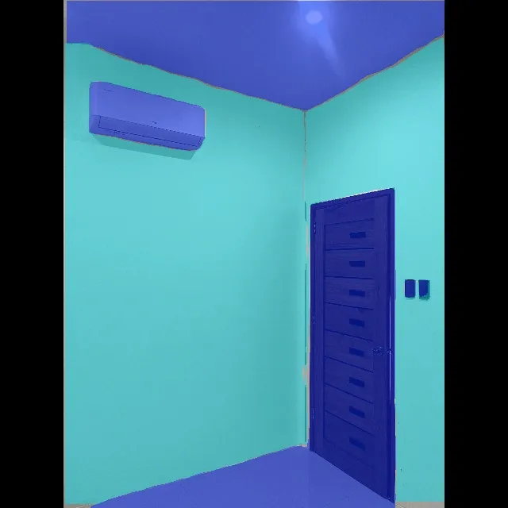
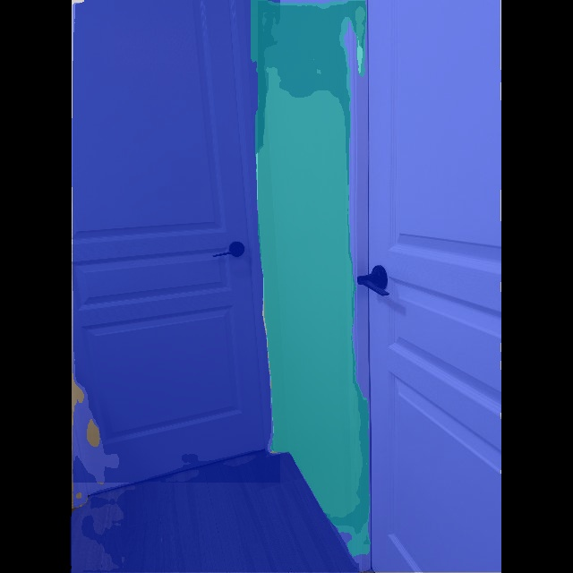
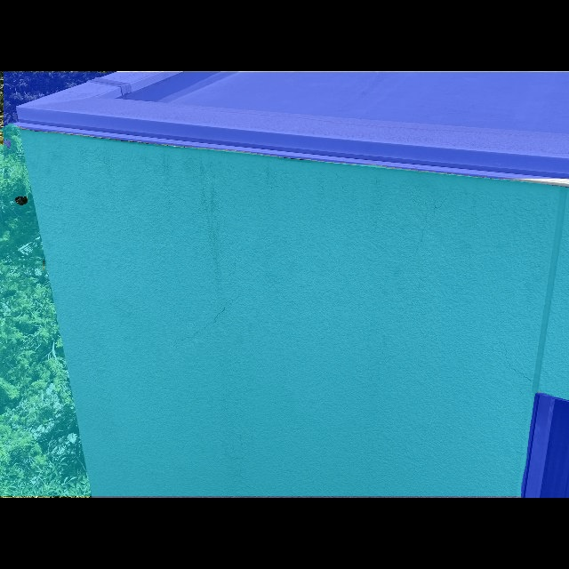
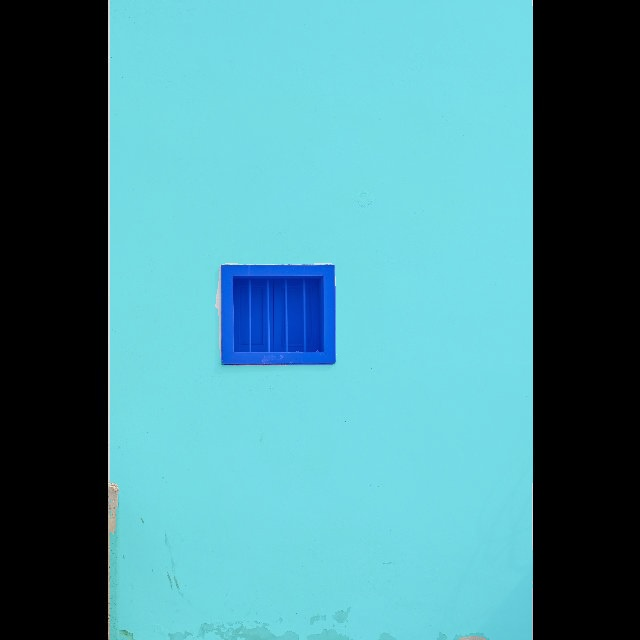
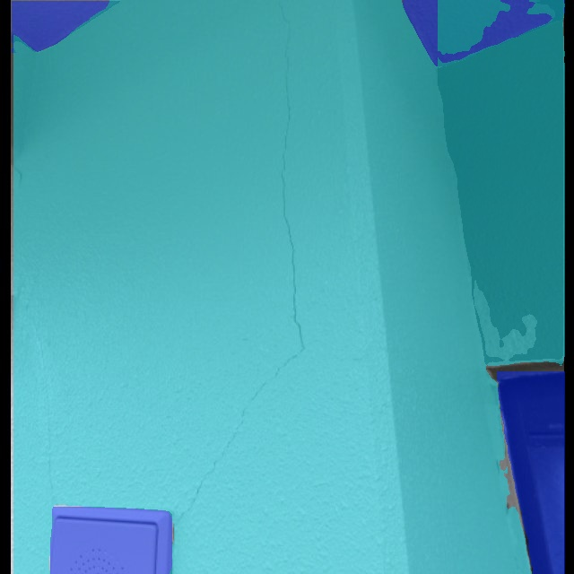

Evaluation
Model Performance — YOLOv8 Instance Segmentation
Segmentation Metrics
mAP@0.50
0.780
Mask mAP at IoU 0.50
mAP@0.50–0.95
0.548
Averaged over IoU 0.50–0.95
Precision
0.845
Of predicted regions, share correct
Recall
0.729
Of actual regions, share found
Precision (0.845) exceeding recall (0.729) means the model is conservative: regions it marks as paintable wall are usually right, but it still misses some wall area — the safer failure mode for a painting robot, since under-segmentation leaves a gap while over-segmentation risks painting a non-paintable surface.
Training Configuration
Dataset Size
300 images (current) → 1,000 images (target)
2 classes — wall, non-paintable
Training Compute
Kaggle Tesla T4 GPU
Inference runs locally on an RTX 3050
Model
YOLOv8n-seg
COCO-pretrained, fine-tuned · Ultralytics
Epochs
100
Early stopping, patience = 20
Image Size
640 × 640
Letterboxed at inference
Confidence Threshold
0.25
IoU 0.45 for mask NMS
Validation Output Gallery

Test Result 1 — Wall Segmentation
YOLOv8 Instance Segmentation | conf=0.25
Test Result 2 — Wall Segmentation
YOLOv8 Instance Segmentation | conf=0.25
Test Result 3 — Wall Segmentation
YOLOv8 Instance Segmentation | conf=0.25
Test Result 4 — Wall Segmentation
YOLOv8 Instance Segmentation | conf=0.25
Test Result 5 — Wall Segmentation
YOLOv8 Instance Segmentation | conf=0.25
Test Result 6 — Wall Segmentation
YOLOv8 Instance Segmentation | conf=0.25The masks above were produced by a YOLOv8n-seg instance segmentation model fine-tuned on a 300-image custom dataset annotated via Roboflow and trained on a Kaggle Tesla T4 GPU. Metrics on this page come from that v2 run and are reported as preliminary; they will be recomputed after the dataset reaches the 1,000-image target.